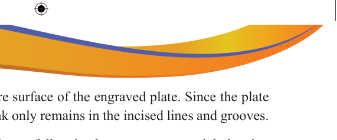

Inking: Ink is applied to the entire surface of the engraved plate. Since the plate is wiped clean after inking, the ink only remains in the incised lines and grooves.
Wiping: The surface of the plate is carefully wiped to remove excess ink, leaving ink only in the engraved areas.
Printing: A dampened sheet of high-quality paper is placed on the inked plate, and pressure is applied to transfer the ink from the plate to the paper. This pressure is usually applied using a roller press or an intaglio printing press, which forces the paper into the incised lines, picking up the ink. This results in a high level of detail and depth in the final print.
Drying: The printed paper is left to dry thoroughly before any further processing or handling.

Activity 4.3
Design and make a copper plate of your choice using engraving and etching techniques. Then, make prints on paper using your coper plate designs.
Screen printmaking
This is a procedure of transferring a motif or design by using a screen. A special mesh is attached and stretched tightly over the frame. Then, the image is transferred to it, and lastly, the squeegee is used to push ink and enable the penetration of the paint through the transparent motif on the screen to the surface. Screen printing is widely used for a variety of applications, including t-shirts, posters, signage, textiles, electronics, and more. Its ability to print on various surfaces, along with the vibrant colours and durability of the prints, makes it a favoured choice for many printing projects. Figure 4.5 shows a prepared screen with motifs.